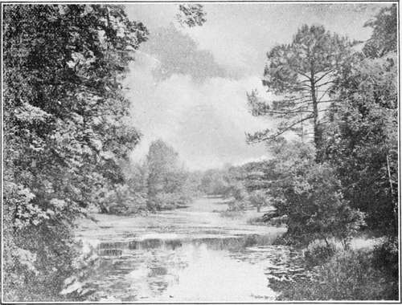

Landscape Gardening. Part 3
Description
This section is from the book "A History Of Gardening In England", by Alicia Amherst. Also available from Amazon: A History Of Gardening In England.
Landscape Gardening. Part 3
The name which stands out most conspicuously in connexion with landscape-gardening is that of Brown. From his habit of saying of any place he was asked to improve, or lay out afresh, that it " had great capabilities," he became known by the name of " Capability Brown." For a time he was the most popular of all designers. He was born in Northumberland in 1715, and began as a kitchen-gardener, first at a small place near Woodstock, and then at Stow. He remained with Lord Cobham, in that capacity, until 1750, and it was not until, as head-gardener to the Duke of Grafton, he planned and executed a lake at Wakefield Lodge, that he attempted any designing. This brought him into notice, and through the influence of Lord Cobham, he was appointed Royal Gardener at Hampton Court, "and it was he who planted the celebrated vine* there, in 1769.† He was next employed at Blenheim, and the way in which he made the lake there established his reputation, and soon every one who washed to alter their grounds, or lay out new ones, employed Brown. He laid out Croome, Luton, Trentham, Nuneham, Burghley, and many other places, and altered in some way or the other half the gardens in the country. He became the fashion, and was consulted by nearly every one in England who had a garden of any consideration. Had Brown confined himself to creating new landscapes and gardens, posterity could not have borne such a grudge against him. As it is, in studying the designs he carried out, it is difficult to look with an unprejudiced eye at his work, for before the results he produced can be admired, one is filled with regret for the beauties he swept away.
* London, Encyclopaedia of Gardening.
† Phillips, Pomariam, 1820. The parent of the Hampton Court Vine was a Black Hamburg planted by Mr. Eden at Valentine House, Essex, 1758.
" Improvement too, the idol of the age, Is fed with many a victim. Lo he comes ! The omnipotent magician, Brown, appears! Down falls the venerable pile, the abode Of our forefathers.....
He speaks—The lake in front becomes a lawn ; Woods vanish, hills subside, and valleys rise, And streams, as if created for his use Pursue the track of his directing wand".
Cowper, The Garden.
Old gardens in every part of England disappeared before the transforming influence of Brown, but luckily before many years had passed a reaction set in, or it is doubtful whether a single garden would have survived. Sir Uvedale Price* described his pleasure on approaching " a venerable castle-like mansion built in the beginning of the fifteenth century," through an avenue of fine old trees. " I was much hurt," he continues, "to learn from the master of the place, that I might take my leave of the avenue and its romantic effects, for that its death-warrant was signed. The destruction of so many of these venerable approaches, is a fatal consequence of the present excessive horror of straight lines. ... As to saving a few of the trees, I own I never saw it done with a good effect; they always pointed out the old line, and the spot was haunted by the ghost of the departed avenue. ... At a gentleman's place in Cheshire, there is an avenue of oaks. Mr. Brown absolutely condemned it, but it now stands a noble monument of the triumph of the natural feelings of the owner over the narrow and systematic ideas of a professed improver." One is thankful that a few people had strength of mind enough to resist the all-powerful Brown.
The management of water was considered Brown's strong point. A pleasing example of a sheet of water laid out by him is that at Castle Ashby.† As it is now "improved by time " it could not fail to please even the most determined detractors of Brown. But here, too, Brown's hand worked destruction as well as improvement, for two rows of trees, forming part of one of the avenues planted about 1699, were felled by his orders. He was lost in admiration of the rivers and lakes he created. Having completed one of these, he thought he had achieved such a success as to surpass the Thames, and is said to have exclaimed:—" Thames ! Thames! thou wilt never forgive me!" At Hackwood Park,* in Hampshire, Brown effected various changes, which were thus spoken of a few years later :—" Alterations on a considerable scale " were carried out, particularly on the south of the house, where there had been a garden, " in the old style, with terraces, ascended by flights of steps, and adorned with statues on pedestals, a great reservoir of water, angular ramparts, etc. ; the view from the house was also interrupted by high yew hedges skirting long and formal avenues. Nature has now regained her rights; the avenues have been broken into walks and glades, and several distant views admitted." It never seems to have occurred to these landscape-gardeners that an avenue and a yew hedge were in themselves beautiful objects. It is almost like a Norfolk girl who visited Switzerland, and complained that the mountains shut out the view ! Another scheme of wholesale devastation he suggested, was luckily not acted upon. He proposed to blast away that part of the rock on which Powis Castle stands, which forms the first or " Sundial terrace," and make it into a fiat lawn. This change would have been completely out of all keeping with the rest of the lovely garden, which had been made in the time of William and Mary, by Lord Rochfort, a Dutchman, who for a few years held the estates. The alterations he carried out at Burghley were also typical of his method. He took away the walls and hedges, entirely swept away a terraced kitchen-garden on a slope near the house, and in its place planted trees ; beyond this wooded-eminence of his own creating, and in front of the site of the old formal garden, he made a lake. "How far the fashionable array, in which Mr. Brown has dressed the grounds, about this venerable building, agrees with its formality, and antique appendages, I dare not take upon me to say," wrote Gilpin, a few years after Brown's work was completed. "A doubt arises," he continues, " whether the old decoration of avenues and parterres was not in a more suitable style of ornament. It is, however, a nice question, that would admit of many plausible arguments on both sides".
* Sir U. Price, On the Picturesque.
† Belonging to the Marquess of Northampton.
Castle ashby.
* The seat of Lord Bolton.
Continue to: